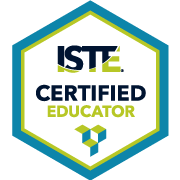
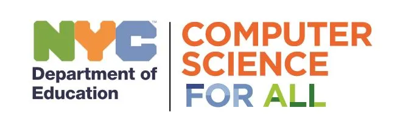

Susie S. Li
Professional Development Journey: Engaging in Growth and Learning
ISTE Certified Educator
Becoming an ISTE (International Society for Technology in Education) certified Educator has been a transformative journey for me, empowering me to leverage technology effectively in my teaching practice. Throughout the certification process (NYCDOE February 2023 Cohort 4), I have engaged in rigorous professional learning experiences, gaining invaluable insights into cutting-edge educational technology tools, pedagogical strategies, and digital citizenship practices. Highlights of my certification journey include deepening my understanding of how to integrate technology to enhance student engagement, collaboration, and creativity, while also fostering critical thinking and problem-solving skills. Additionally, I've had the opportunity to cultivate a strong network of like-minded professionals, collaborating and sharing best practices within the global ISTE community.
CS4All Creative Web Curriculum Co-Facilitator
As a co-facilitator of the Creative Web curriculum professional development tailored for middle school teachers across diverse content areas, I have had the privilege of leading educators through an enriching year-long coding adventure. Our professional development program empowers teachers to introduce text-based coding to their students through immersive, hands-on experiences. By prioritizing collaboration and community engagement, we guide participants to explore the wealth of online resources available, equipping them with the tools and knowledge to make coding accessible to all students in their classrooms.
Explore the Creative Web Curriculum Resource Bank featured below. (This collection of resources is a collaborative effort by Blythe Worster, Kate Maschmeyer, and Susie Li.)
Note: There are 3 tabs in this file: "Unit", "Additional Resources", and "Student and Teacher Examples". The "Unit" tab is the main content of the file. The "Additional Resources" tab contains additional resources such as PD slide decks, coding videos, and references. The "Student and Teacher Examples" tab contains examples we have collected during the PD session and from our classrooms.